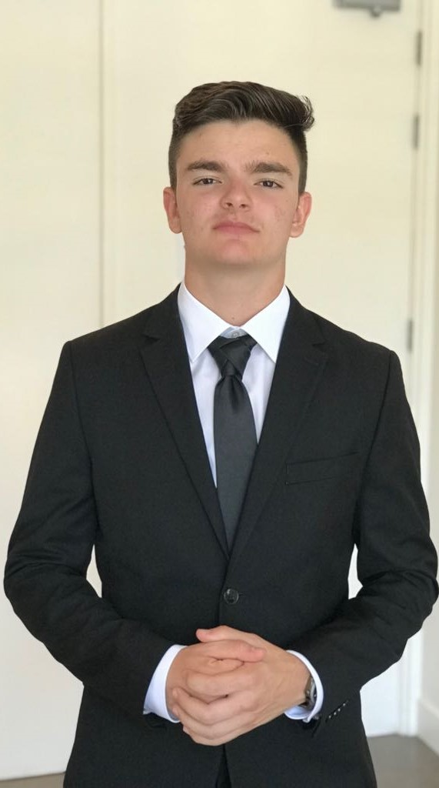
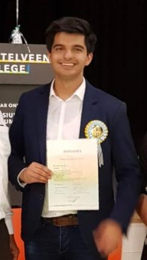
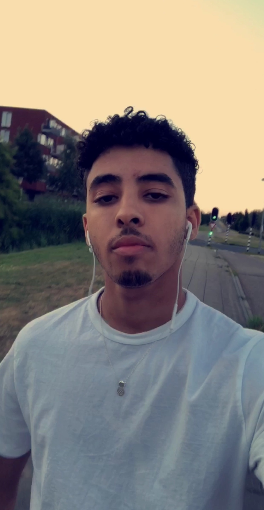
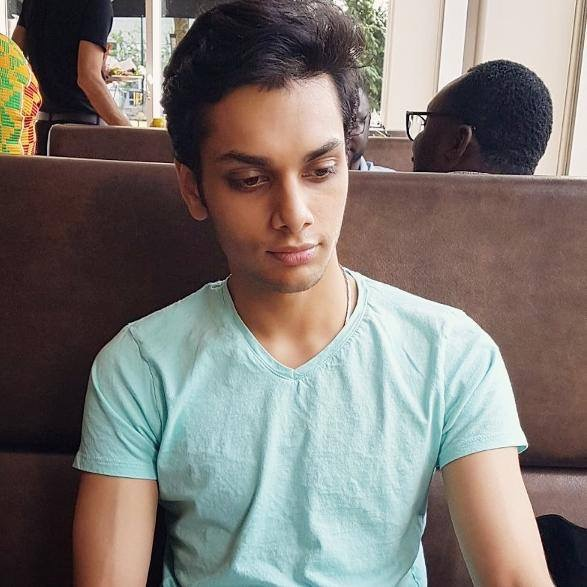
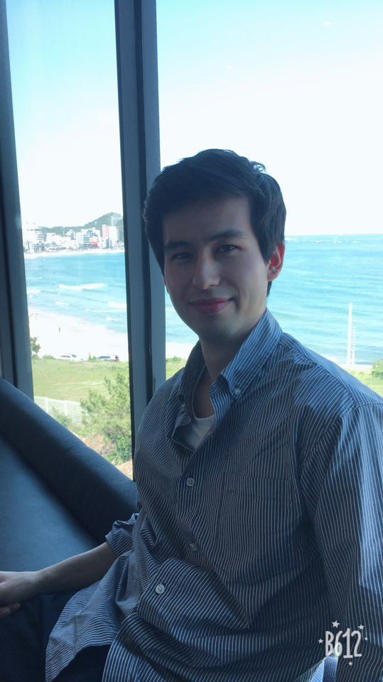
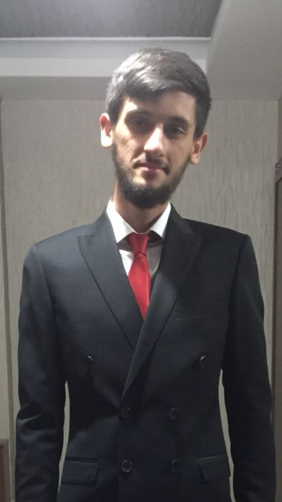

Ontmoet ons team:
Martin
Antonov

Voorzitter
Danial
Iqbal

Notulist & Designer
Anass
Mortaki

Researcher
Abbas
Sardar

Head developer
Jason
Schermer

Planner
Onur Ortaakarsuci
Tester
Voorwaarden/Afspraken
Al onze voorwaarden/afspraken:
- Bij afwezigheid zonder geldige reden wordt er bij de eerste keer een waarschuwing gegeven. Bij herhaling van dit probleem wordt er per direct interne actie ondernomen. De projectvoorzitter (Martin Antonov) en onze Loopbaan Adviseur (Anna Hoogenboom) worden op de hoogte gesteld van dit probleem. Martin Antonov en Anna Hoogenboom zullen uiteindelijk de consequentie bepalen. Mocht je een keer niet kunnen, is dit geen probleem. Zorg er wel voor dat dit tijdig aangekaart is bij het groepje (door middel van Whatsapp of Discord).
- Tijdens de FYS-Meeting op 7 September 2018 is er besproken dat Martin Antonov de voorzitter is van onze project groep. Hij is het aanspreekpunt van ons team. Als er onduidelijkheden, vragen of opmerkingen zijn dien je contact op te nemen met Martin over deze zaken. Hij zal met Anna Hoogenboom het directe aanspreekpunt voor ons groepje zijn.
- Je kunt ten alle tijden jouw problemen binnen de groep bespreekbaar maken. Eerlijkheid is een van de belangrijkste kernwaarden binnen ons groepje. Heb je een probleem met iemand uit een groepje? Is er thuis een probleem gaande? Voel je vrij om contact op te nemen met de groep. Indien het een prive reden is, raden we aan om contact op te nemen met onze Loopbaan Adviseur (Anna Hoogenboom). We zullen gezamenlijk als groep (eventueel met behulp van Anna Hoogenboom) een oplossing zoeken voor het probleem.
- Elk teamlid dient zelfstandig zijn progressie bij te houden. De progressie dient openbaar genoteerd te worden via Trello. Je kunt onze pagina vinden via Trello. Alle leden van dit project zijn toegevoegd en hebben toestemming om aantekeningen toe te voegen
- Elke week komen we minimaal een keer samen om onze voortgang te bespreken. Dit kan door middel van diverse middelen, denk aan: Discord, Google Hangout of een persoonlijke afspraak.
- Wanneer afspraken op een regelmatige basis niet nagekomen worden heeft het groepje recht om actie te ondernemen. In uitzonderlijke gevallen kan dit leiden tot verwijdering uit de groep.
- Alle teamleden verklaren door middel van het ondertekenen van dit samenwerkingscontract dat ieder individueel het minimale aantal aangegeven studie-uren aan dit project besteedt. Voor uitzonderlijke gevallen (ziekte/prive reden) kun je altijd contact opnemen met onze projectvoorzitter (Martin Antonov) of onze Loopbaan Adviseur (Anna Hoogenboom).